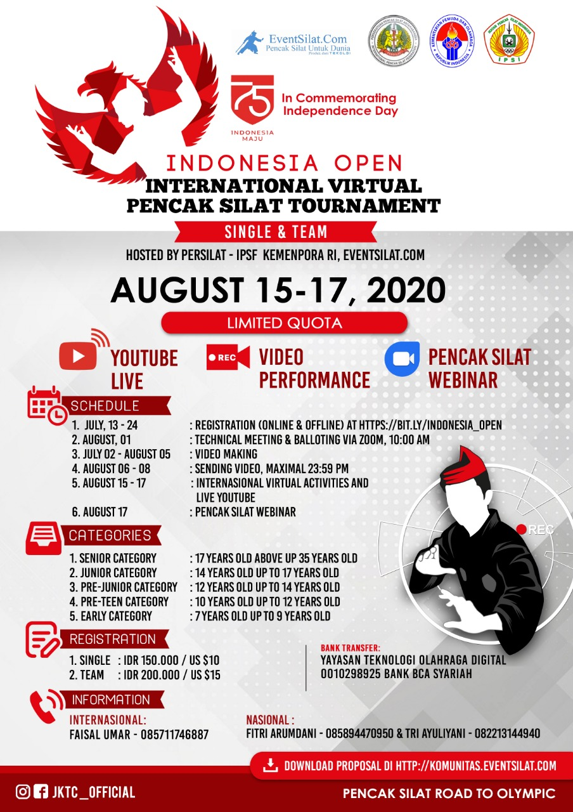
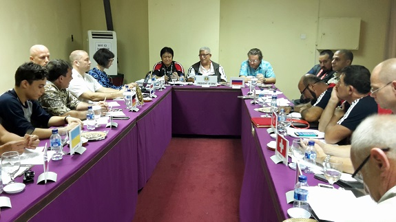
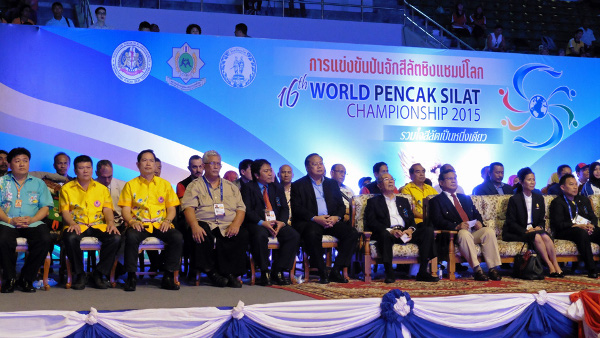
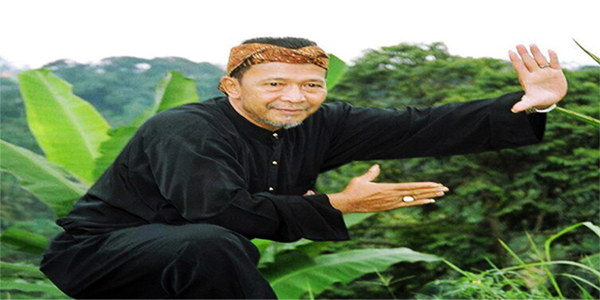
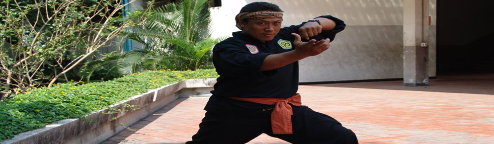
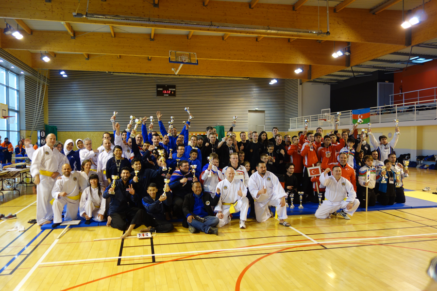
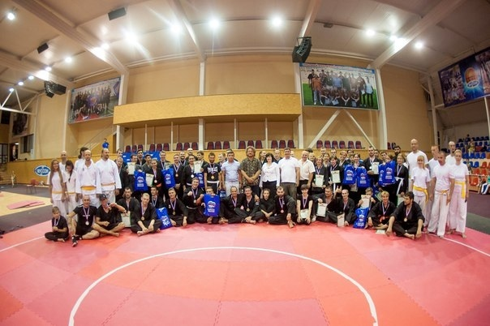

Open Indonesia Virtual Pencak Silat Tournament 2020
Registration INDONESIA OPEN INTERNATIONAL VIRTUAL PENCAK SILAT TOURNAMENT is Open. This Tournament will be held on August 15th – 17 th 2020. To all official team please prepare the athlete and its requirements. For further information, you can download the proposal.
Read More
Pencak Silat was designated as the World Intangible Cultural Heritage of Indonesia
Read More
Visit to the Indonesian Ministry of Sports and Youth in Indonesia
Read More
Belgium Open Pencak Silat Championships 2018
Read MoreEuropean Pencak Silat Championships 2017
Read More
Europe Win Gold at Silat World Championships 2016
Read MoreBapak Haka Tahrir (1918 - 2016)
Read MoreEuropean Training Camp 2016
Read More
EPSF Board Election 2016
Read More
European Wasit & Juri at 17th Silat World Championships
Read More
Pencak Silat Dutch Open 2016
Read More
Pencak Silat World Championships 2015
Read More
Bapak Mohamed Rifai Sahib (1947 - 2014)
Read More
Bapak O'ong Maryono (1953 - 2013)
Read More
Pencak Silat European Championships 2013
Read More